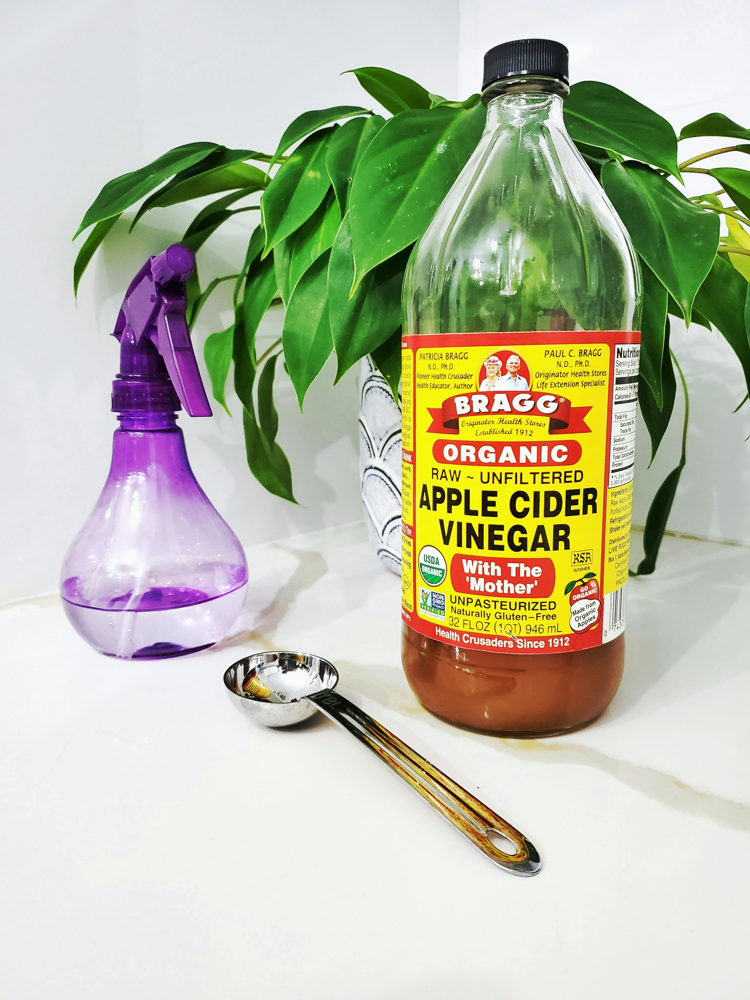

ACV vs. White Vinegar: What's the Difference?
Apple cider vinegar and white vinegar are both commonly used for cooking and cleaning, but they have distinct differences:
- Source:Apple cider vinegar is made from fermented apple juice, while white vinegar is produced by fermenting grain alcohol (ethanol). This gives ACV a mild, fruity flavor compared to the sharp, neutral taste of white vinegar.
- Flavor:ACV has a more complex, slightly sweet flavor due to the apple fermentation process, while white vinegar has a more acidic and pungent flavor, making it ideal for pickling and cleaning.
- Health Benefits:ACV is known for its potential health benefits, including supporting digestion, weight loss, and regulating blood sugar. White vinegar, on the other hand, doesn’t have the same health-promoting properties but is effective for cleaning and preserving food.
- Uses:ACV is often used in dressings, marinades, and health drinks, while white vinegar is commonly used for cleaning, in recipes like pickles, and in baking as a leavening agent.
